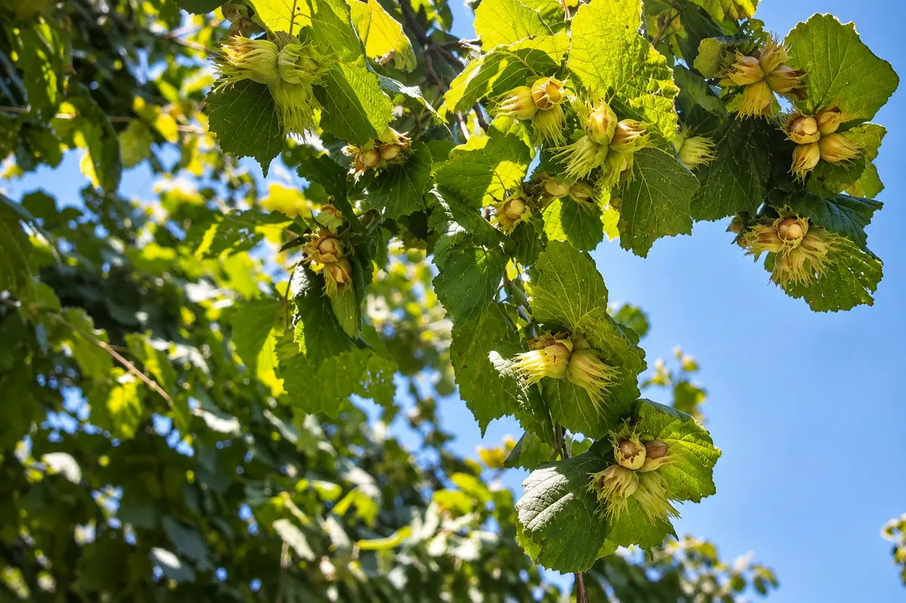
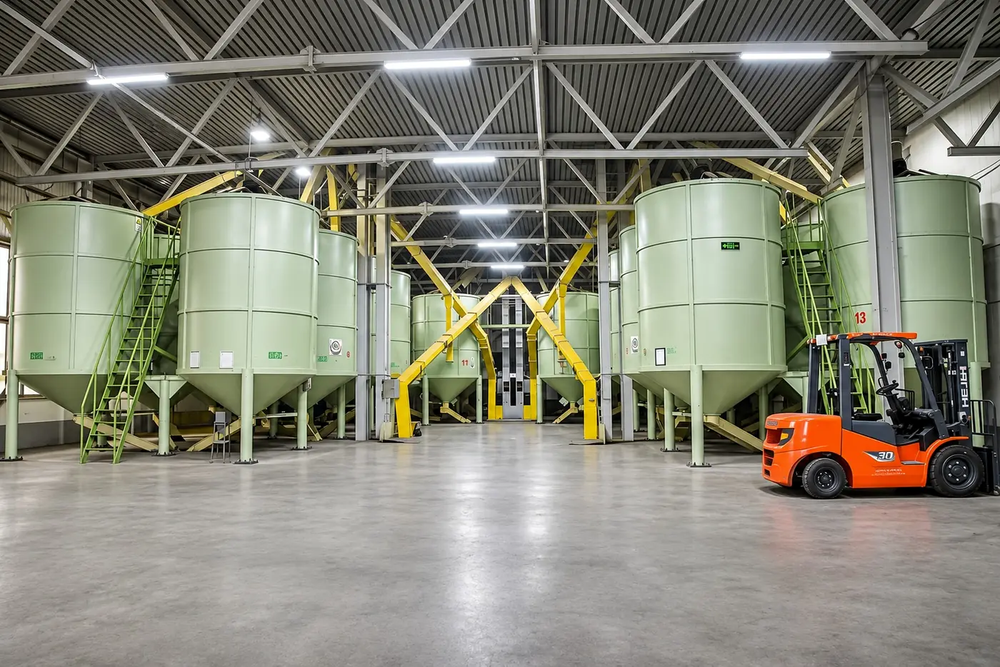
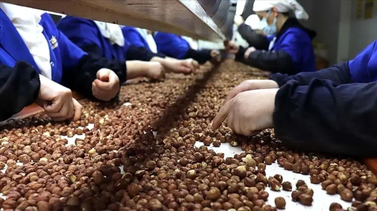
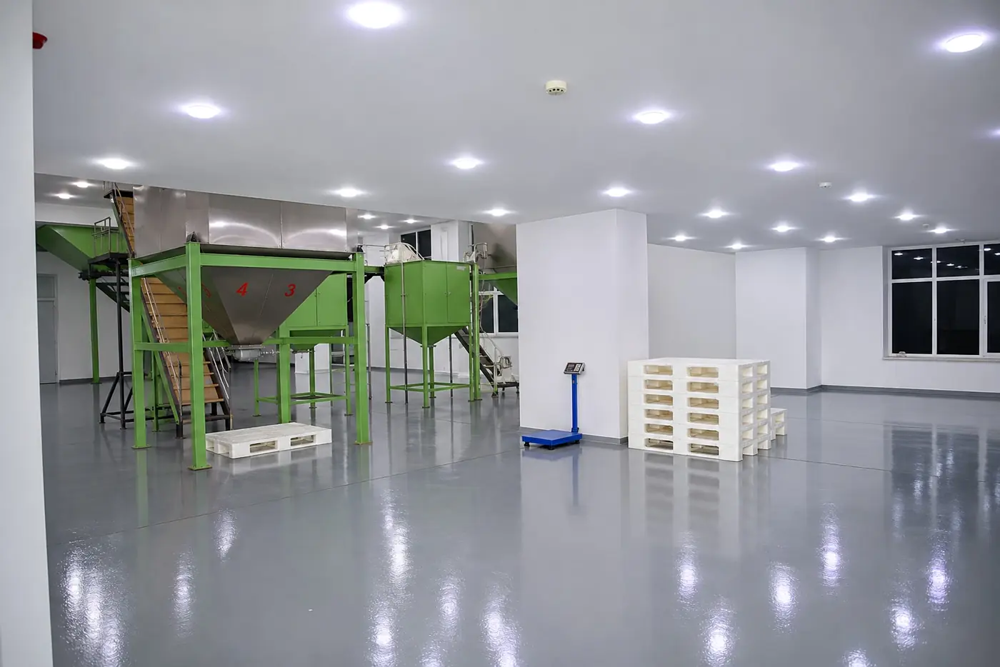
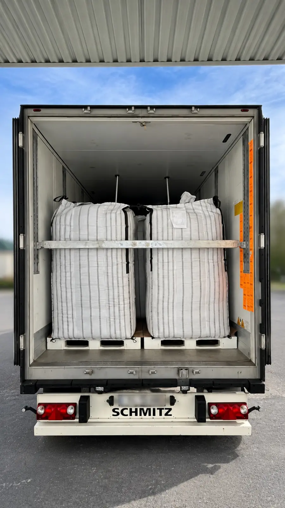

Bağdan göndərişə qədər inteqrasiya olunmuş
Fındığımızı özümüz yetişdirdiyimiz, emal etdiyimiz və qablaşdırdığımız üçün hər mərhələ öz komandamız tərəfindən idarə olunur, müştərilərimiz üçün keyfiyyəti, təhlükəsizliyi və sabitliyi qoruyan nəzarətlərlə.

Dörd istehsal mərhələsi
Çiçəkdən konteynerə qədər dörd nəzarətli mərhələ

Yetişdirmə və Məhsul Yığımı
Qəbələdəki 500+ hektar bağlarımız fındıqçılıqda 20 ildən artıq təcrübəsi olan aqronomlar tərəfindən ekoloji istehsal təcrübələrinə uyğun idarə olunur. Fındıq optimal yetişkənlik dövründə yığılır.

Emal
Qırma, çeşidləmə, kalibrləmə, ağardılma, qovurma, doğrama və üyütmə gündəlik 20 tondan çox emal gücünə malik müasir müəssisəmizdə həyata keçirilir.

Keyfiyyət Nəzarəti
Hər partiya daxili laboratoriyamızda nəmlik və keyfiyyət göstəriciləri üzrə yoxlanılır, hazır məhsul isə qablaşdırmadan əvvəl metal detektordan keçir.

Qablaşdırma və İxrac
Məhsullar vakuum, kağız, PP kisələrə, big bag-lara və ya pərakəndə qablara qablaşdırılır, paletlənir və FCL və ya LCL yükləri ilə dünya üzrə müştərilərə göndərilir.
Hər göndərişin arxasında altı nəzarət
Qida təhlükəsizliyi idarəetmə sistemimiz FSSC 22000 və ISO 22000:2018 üzrə sertifikatlaşdırılıb.
Daxili Laboratoriya
Hər istehsal partiyası üçün nəmlik, ölçü və keyfiyyət göstəriciləri yerində yoxlanılır.
Metal Detektor
Hazır məhsul qablaşdırmadan əvvəl metal detektordan keçir.
Xammalın Yoxlanılması
Daxil olan fındıq istehsala buraxılmazdan əvvəl yoxlanılır və çeşidlənir.
İstehsalın Monitorinqi
Kritik proses parametrləri hər mərhələdə izlənilir və qeydə alınır.
Hazır Məhsulun Yoxlanılması
Hər partiya buraxılmazdan əvvəl spesifikasiyaya uyğunluq üzrə yoxlanılır.
İzlənilmə
Hər partiya bağdan göndərişə qədər izlənilə bilər.




Etibarlı fındıq tədarükçüsü axtarırsınız?
Məhsulu, spesifikasiyanı və həcmi bizə bildirin. Satış komandamız mövcudluq və fərdi təkliflə cavab verəcək.